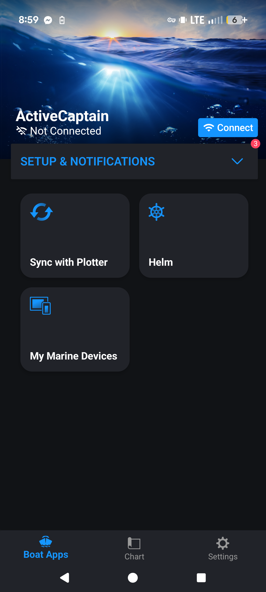

Clickable menu flows • Multi-device ready • v0.3
activecaptain/ folder. Add new devices as new folders (e.g. gpsmap/, fusion/). The navigator will grow with you.

Click any card to load the real screenshot. Future: click directly on menu items in the image.